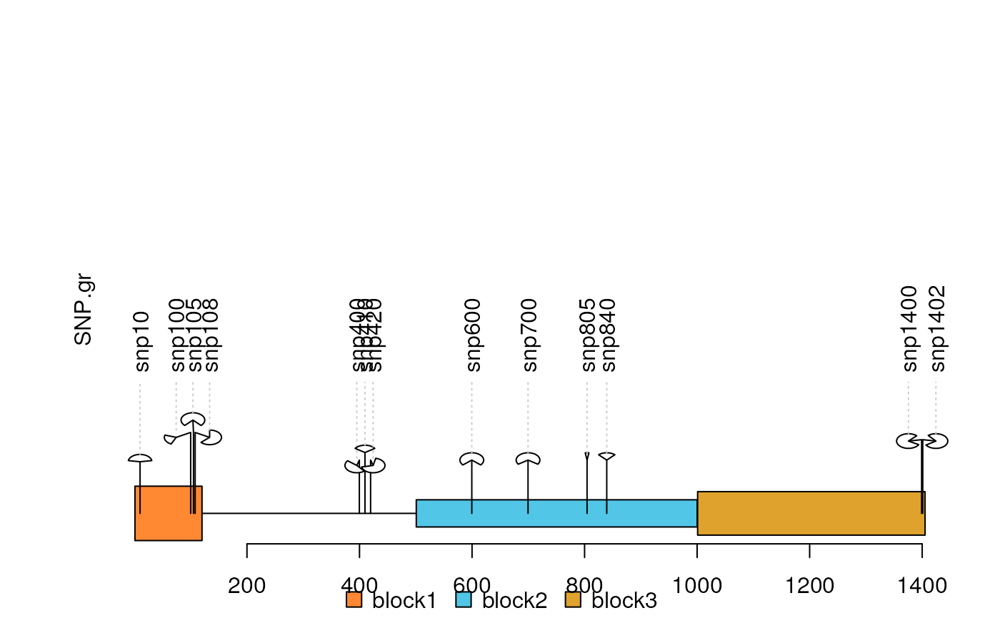

dandelion.plot.RdPlot variants and somatic mutations
dandelion.plot( SNP.gr, features = NULL, ranges = NULL, type = c("fan", "circle", "pie", "pin"), newpage = TRUE, ylab = TRUE, ylab.gp = gpar(col = "black"), xaxis = TRUE, xaxis.gp = gpar(col = "black"), yaxis = FALSE, yaxis.gp = gpar(col = "black"), legend = NULL, cex = 1, maxgaps = 1/50, heightMethod = NULL, label_on_feature = FALSE, ... )
| SNP.gr | A object of GRanges or GRangesList. All the width of GRanges must be 1. |
|---|---|
| features | A object of GRanges or GRangesList. |
| ranges | A object of GRanges or GRangesList. |
| type | Character. Could be fan, circle, pie or pin. |
| newpage | plot in the new page or not. |
| ylab | plot ylab or not. If it is a character vector, the vector will be used as ylab. |
| ylab.gp, xaxis.gp, yaxis.gp | An object of class gpar for ylab, xaxis or yaxis. |
| xaxis, yaxis | plot xaxis/yaxis or not. If it is a numeric vector with length greater than 1, the vector will be used as the points at which tick-marks are to be drawn. And the names of the vector will be used to as labels to be placed at the tick points if it has names. |
| legend | If it is a list with named color vectors, a legend will be added. |
| cex | cex will control the size of circle. |
| maxgaps | maxgaps between the stem of dandelions. It is calculated by the width of plot region divided by maxgaps. If a GRanges object is set, the dandelions stem will be clustered in each genomic range. |
| heightMethod | A function used to determine the height of stem of dandelion. eg. Mean. Default is length. |
| label_on_feature | Labels of the feature directly on them. Default FALSE. |
| ... | not used. |
In SNP.gr and features, metadata of the GRanges object will be used to control the color, fill, border, height, data source of pie if the type is pie.
SNP <- c(10, 100, 105, 108, 400, 410, 420, 600, 700, 805, 840, 1400, 1402) SNP.gr <- GRanges("chr1", IRanges(SNP, width=1, names=paste0("snp", SNP)), score=sample.int(100, length(SNP))/100) features <- GRanges("chr1", IRanges(c(1, 501, 1001), width=c(120, 500, 405), names=paste0("block", 1:3)), color="black", fill=c("#FF8833", "#51C6E6", "#DFA32D"), height=c(0.1, 0.05, 0.08)) dandelion.plot(SNP.gr, features, type="fan")